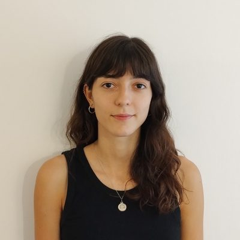
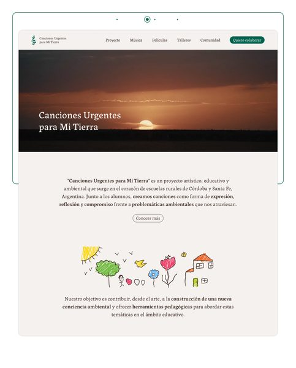
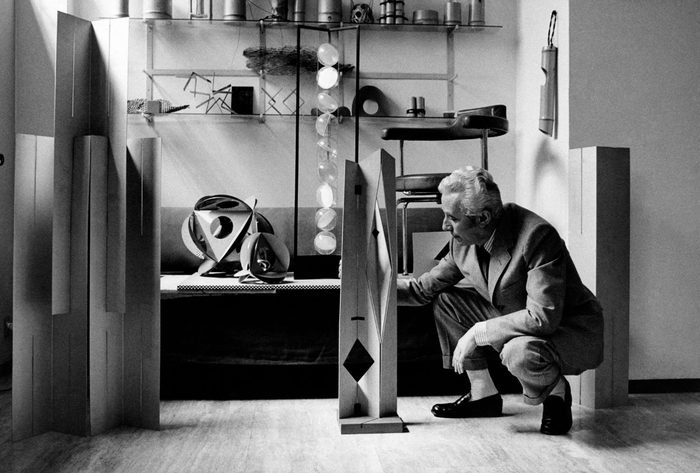
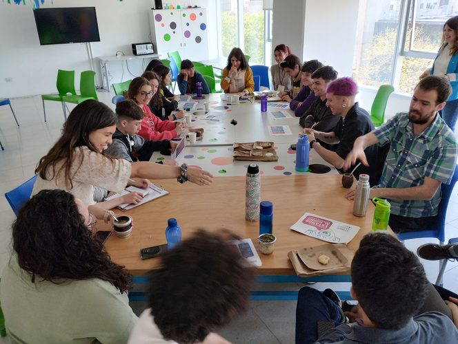
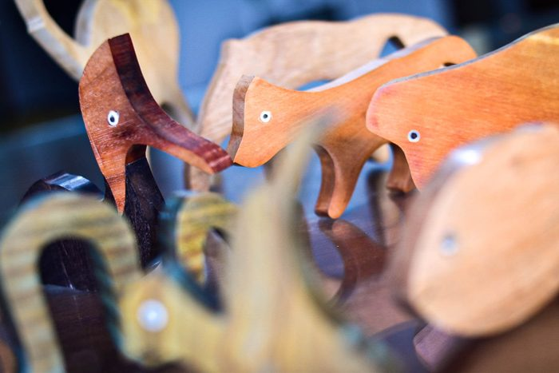

Hola,
soy Cata.
Diseñadora gráfica. Me enfoco en crear soluciones funcionales, con gran atención al detalle y pensando siempre en el usuario. Disfruto del trabajo en equipo y valoro los intercambios que enriquecen el proceso. Estoy abierta a nuevos desafíos que impulsen mi crecimiento personal y profesional.
📍 Córdoba Capital

Foto: Catalina Laje (propia)
Formación académica
-
2025 — Hoy
Licenciatura en Diseño, mención Gráfica
Facultad de Arte y Diseño (FAD) · Universidad Provincial de Córdoba (UPC)
-
2022 — 2024
Tecnicatura Universitaria en Diseño Gráfico
Facultad de Arte y Diseño (FAD) · Universidad Provincial de Córdoba (UPC)
-
2025
Diplomatura en Diseño UX/UI — 138 hs.
Centro de E-learning · UTN, Buenos Aires
Intereses
Proyecto de portfolio

Diseño web colaborativo
Canciones Urgentes
para Mi Tierra
Una iniciativa artística, educativa y ambiental que nace en escuelas rurales de Córdoba y Santa Fe, donde un docente crea canciones con sus alumnos como forma de expresión y compromiso frente a problemáticas ambientales que los atraviesan.
Junto con mi colega Sofía Grosso, diseñamos el sitio web para visibilizar la historia y el trabajo detrás del proyecto, con el objetivo de que llegue a todas partes del mundo.
Captura: diseño de Catalina Laje y Sofía Grosso (propio)
Referentes

Diseñador referente
Bruno Munari
Milán, 1907–1998. Diseñador, artista y pedagogo clave del siglo XX, considerado el gran puente entre el arte y el diseño cotidiano. Su premisa —"complicar es fácil, simplificar es difícil"— sigue siendo uno de los principios más vigentes del diseño. Combinó metodología proyectual con curiosidad lúdica para demostrar que la empatía con el usuario y la experimentación constante son los verdaderos motores de la comunicación visual.
Foto: Bruno Munari (imagen de referencia, dominio público)

Proyecto referente
Iconoclasistas
Colectivo artístico de investigación que fusiona arte político, activismo territorial y pedagogía crítica para diseñar recursos gráficos de uso comunitario y libre (copyleft). Pioneros en metodologías de mapeo colectivo y cartografías críticas desde 2006, ayudan a las comunidades a elaborar relatos propios traduciendo problemáticas territoriales en mapas e iconografías de alto impacto visual.
Foto: taller de Iconoclasistas (imagen de referencia)

Organización referente
Diseñadores Sin Fronteras
Red colaborativa e interdisciplinaria que pone el diseño estratégico y de comunicación al servicio de la transformación social, el desarrollo comunitario y la acción humanitaria. A través de metodologías de codiseño, trabaja junto a organizaciones sociales y comunidades para cocrear soluciones visuales y de hábitat que promuevan la equidad y la autonomía.
Su práctica redefine al diseñador como un facilitador social que descentraliza la disciplina para ponerla al servicio de los derechos humanos y el bienestar colectivo.
Foto: objeto de diseño artesanal (imagen de referencia)